Version: Vitis™ 2023.2 and Matlab™ R2021a with Simulink™ and the DSP System Toolbox™
This example presumes you have installed the Vitis and Vitis Model Composer tools and that you have a basic understanding of those tools. If not, consider starting with the Vitis tutorials at https://github.com/Xilinx/Vitis-Tutorials and within that repository the Vitis Model Composer tutorial at https://github.com/Xilinx/Vitis-Tutorials/tree/2023.2/AI_Engine_Development/Feature_Tutorials/10-aie-dsp-lib-model-composer.
If a Vitis Model Composer model with AIE and PL blocks has multiple clock domains, then there are some guidelines that should be followed for structuring and constraining the design.
Open the example design "aiefirspl_multirate.slx" and note the key elements highlighted below:
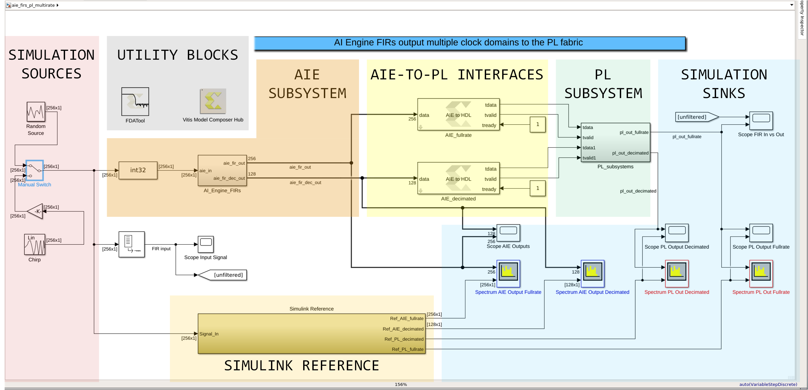
Two SIMULATION SOURCES generate stimulus for simulation. A manual switch toggles between a random signal source and a chirp signal. The random source is best for viewing filter responses in the frequency domain while the chirp is best for viewing responses in the time domain.
The AIE SUBSYSTEM includes two AIE blocks, both FIR filters from the Vitis Model Composer AIE DSP library. Both filters receive the same input data. One generates filtered output at the same sample rate as the input, while the second generates outputs at half the input rate (a decimate-by-two in DSP vernacular).
Those two output paths, one at full rate and the other decimated, feed two separate AIE-TO-PL INTERFACES which translate AIE outputs into a format suitable for the PL SUBSYSTEM which in turn outputs to the SIMULATION SINKS. The sinks include frequency domain spectrum analyzers and time domain scopes.
These spectrum analyzers and scopes also receive inputs from the SIMULINK REFERENCE block which is a functionally equivalent model built exclusively from Simulink blocks. This provides a reference to compare the double-precision floating point output of the Simulink model to the fixed-point output of the synthesizable model.
Two UTILITY BLOCKS are also part of the design: The first, the Simulink FDATool, is used to generate filter coefficients which are used by both AIE FIR filters as well as the Simulink reference filter. The second, the Vitis Model Composer Hub, is used to constrain the design and control generation of output products.
The focus area for structuring is the PL portion of the model. There are two specific requirements in terms of partitioning the design to support multiple rates:
The first requirement is to partition the PL portion of the design into a single subsystem from the top-level. To see that in this design double-click on the block "PL_Subsystem" to push into the PL subsystem:
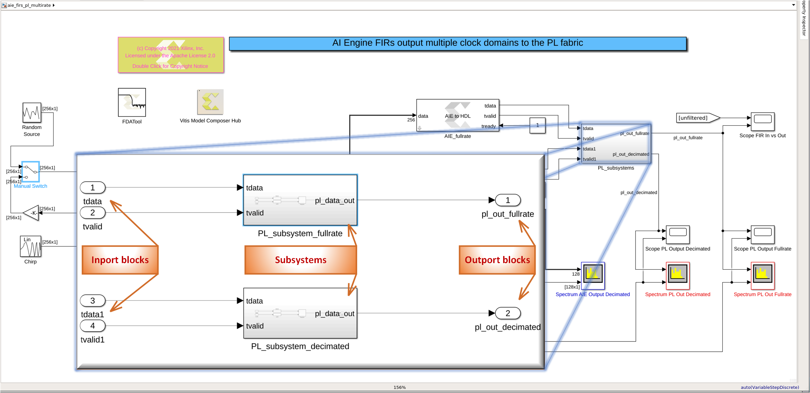
Note that Simulink Inport blocks bring signals from the top-level model into this subsystem, and Simulink Outport blocks link outputs from the subsystem to the top-level.
The second structural requirement is that within the PL subsystem additional subsystems should be generated such that each subsystem contains a single clock domain. In the example design there are two subystems (as shown in the image above), one for each of the two clock rates. The subsystem "PLsubsystemfullrate" runs at the full sample rate while the subsystem "PLsubsystemdecimated" runs at half that rate.
Push into the "PLsubsystemfullrate" subsystem and note the following:
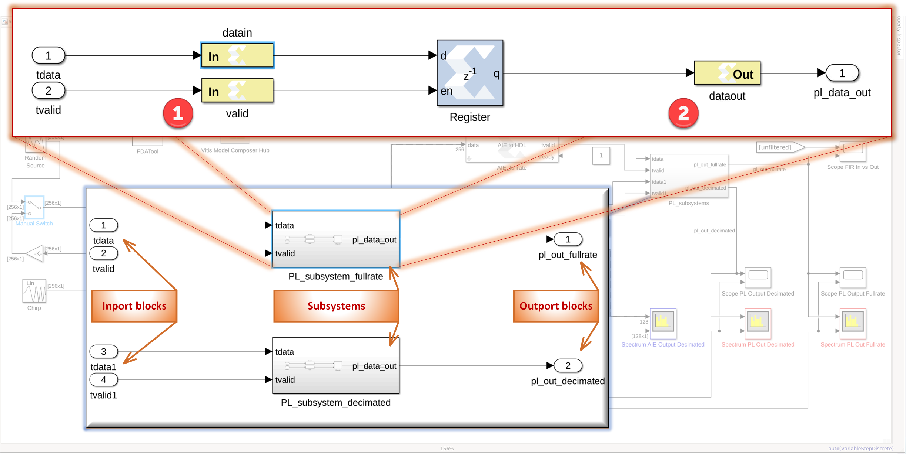
(1) Gateway In blocks are located between the Simulink Inport blocks and the synthesizable PL blocks.
(2) Gateway Out blocks are located between the synthesizable PL blocks and the Simulink Outport blocks.
Next, double-click on one of the Gateway In blocks (datain or valid) and note that
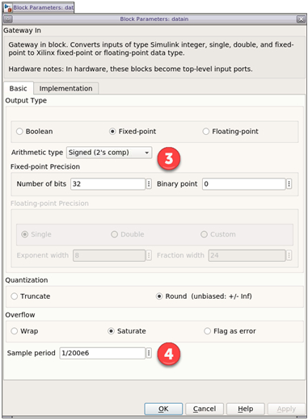
(3) Each Gateway In must specify the data type (32-bit 2's complement integer in this case).
(4) Each Gateway In must specify the clock period (5 ns in this case, specified as inverse of 200 MHz).
Finally, double-click on the Gateway Out block (dataout) and note that
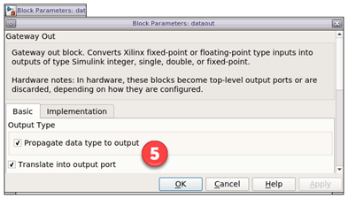
(5) Each Gateway Out must specify options regarding data type propogation and pin mapping. You do not need to specify the clock for these blocks since each output path inherits the clock from the logic which feeds it.
Although the AIE portion of the design is not required to be in a subsystem it is still a good practice. The key point to remember when working with the AIE portion is that it processes vectorized data, so within your Simulink model you will generally have vectorized data paths around the AIE.
If you drop a scope into the model then connect it to one of the AIE paths then it would not display the information in a usable format. Instead each element of the vector is assigned to a different channel yielding a view such as the the following:
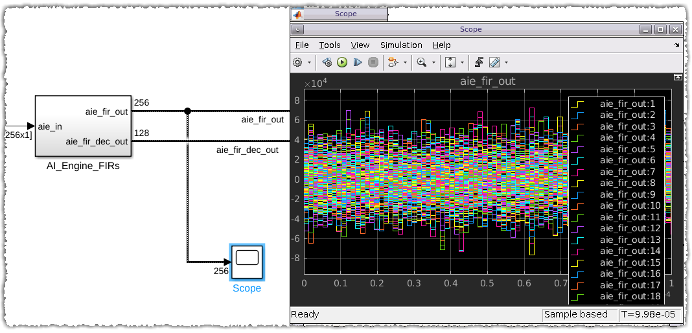
To correct this and display the AIE data properly on a scope do the following:
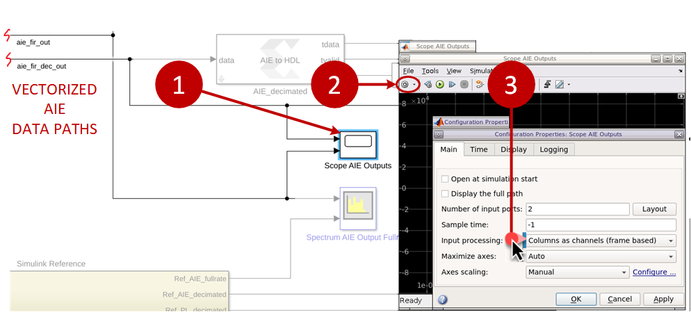
(1) Double-click on the scope to open the scope panel.
(2) Left-click on the gear icon to configure the scope.
(3) Change the input processing from the default "Elements as channels (sample based)" to "Columns as channels (frame based)".
If all inputs to the scope are frame-based then this is the simplest approach.
If you need to mix sample-based and frame-based inputs then consider the approach utilized by the scope which captures the vectorized input signal:
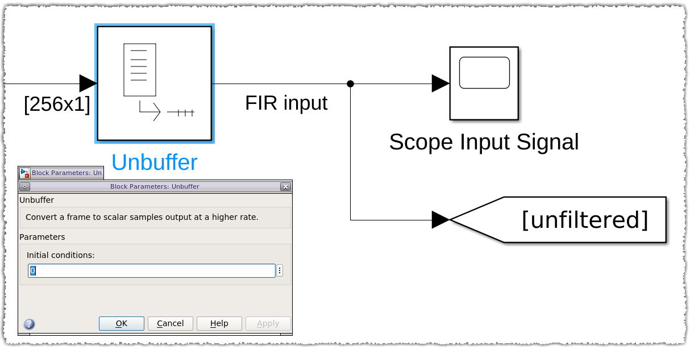
The Simulink Unbuffer block converts the vectorized path into a sample based path which can be fed to the scope "Scope FIR In vs Out" for comparison to another sample based signal using the default "Elements as channels (sample based)" setting in the scope.
Unlike the scope, the spectrum analyzer can process and display the vectorized format of the AIE signal paths without changing any options.
Once the multiple rates are established within PL subsystems you must constrain the clocks for those domains using the Vitis Model Composer Hub block. The steps to do so are illustrated below:
(1) Double-click on the Model Composer Hub block.
(2) Select "Code Generation".
(3) Select the PL subsystem.
(4) Select the "HDL Clock Settings" tab.
(5) Check the box to enable multiple clocks, then specify the number of clocks. A corresponding number of tabs will then appear starting with "Clock1".
(6) Select the tab for "Clock1" and note which PL subsystem the clock is associated with. You may need to make the entire panel wider (by dragging the lower right corner) if the subsystem text box is not wide enough to display the name.
(7) Enter the period for both the FPGA and Simulink clocks. Note that the FPGA clock period is in nanoseconds, while the Simulink period is in seconds. In the example here both are specified for the 100 MHz decimated clock.
(8) Repeat for all other clock tabs ("Clock2" in this case).
(9) Select "OK" when done.
At this point the design should be ready for simulation.
Multirate designs simulate in the same manner as single rate designs.
With the model “aiefirspl_multirate.slx” open in Simulink, double-click on the switch associated with the simulation sources such that the switch points up to select the random signal source. This will feed a Gaussian noise signal into the filters enabling a view of the filter response across the Nyquist band.
Run the simulation and note that two instrumentation windows open automatically – the spectrum analyzer showing the PL frequency domain output, and the scope showing the PL time domain output. These should appear as shown below:
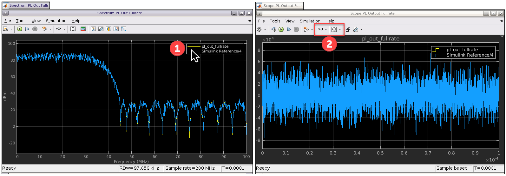
Note that both the scope and the spectrum views have legends which show a PL output and a Simulink reference. This allows you to overlay and compare the fixed-point output from the synthesizable AIE-PL design to the double-precision floating point output generated by the Simulink reference. Some tips for working in these viewers are
(1) You can left-click or right-click on the waveform icons in the legends to display/hide each signal. This can be useful when comparing the output to the expected output from the Simulink reference.
(2) The horizontal and vertical zoom buttons are useful for viewing the outputs in more detail.
For multirate designs the Simulink option to view sample times can prove useful for visually verifying clock domains. To enable this feature left-click the icon with two colored arrows then select “All” as shown below (search Simulink help for “viewing sample time” if your GUI is different):
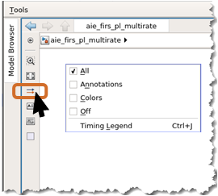
The Simulink model will be updated (this can take several seconds or more) to visibly differentiate the clock domains in the design. By selecting “All” the display will include annotations on signal paths (such as “D1” for discrete domain 1), different colors for the different domains, and a legend that correlates the annotations and colors to the frequencies/periods. The example design should now appear as follows:
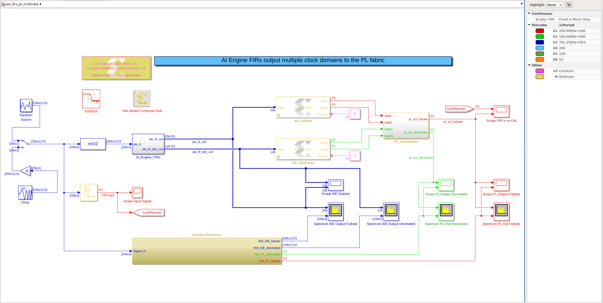
Tracing the now visible domains through the model shows
(1) The starting domain (blue) from the simulation sources to the AIE subsystem runs at 200 Msps, delivered as vectors of 256 elements. The rate is thus 200 MHz / 256 = 781.25 kHz.
(2) Both The full-rate and decimated AIE FIR filters produce outputs in the same (blue) clock domain. The rate change is reflected by the change in the vector size, from 256 elements to 128 elements. This can be seen by the annotations at the output of the “AI_Engine_FIRs” block.
(3) The block “AIE_fullrate” converts the 256-element vector into a 200 MHz path (red).
(4) The block “AIE_decimated” converts the 128-element vector into a 100 MHz path (green).
(5) The two rates (red and green) track through the “PL_subsystems” block and are delivered as outputs.
At this point you now have the tools to structure and constrain a multirate design in Vitis Model Composer. The remainder of this discussion will cover the functional aspects of this design then summarize the main points.
The frequency domain output from the simulation run should correlate to the filter designed in the FDATool. To see that, open the FDATool and compare the FDATool normalized frequency response to the full-rate spectrum output.
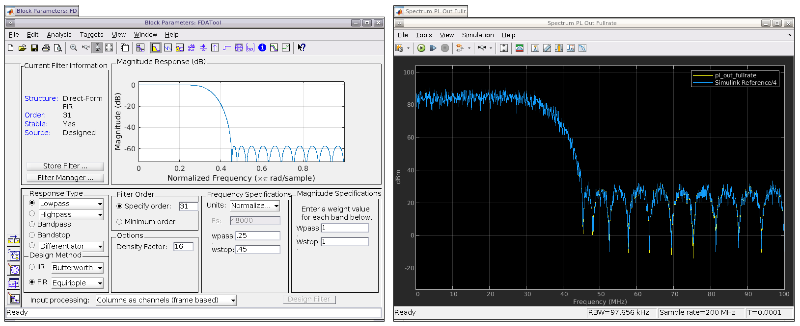
Since the input for all filters is 200 Msps the Nyquist frequency is 100 MHz, and the normalized 'wstop = 0.45' in the FDATool equates to a stop band at 45 MHz. That is exactly what is shown in the spectrum output by both the full rate and decimated filter paths.
If you experiment with the filter characteristics in the FDATool then keep the following points in mind:
(1) Filter coefficients are stored in the file "fwizdef.fda".
(2) If you save new coefficients from the FDATool then you should save them to that file to avoid having to change all references to the coefficients.
(3) The decimated filter has a Nyquist frequency that is half that of the full-rate filter. Any 'wstop' value greater than 0.5 will thus push the stop band outside of the decimating filter's Nyquist zone.
To view the filter responses in the time domain switch the simulation source to the chirp source (using the toggle switch). Rerunning simulation should show the following:
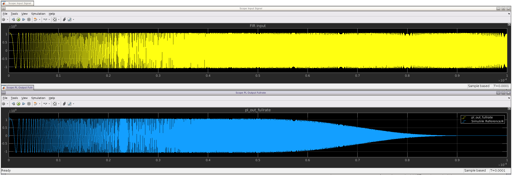
The simulation input (shown in yellow) shows the constant amplitude signal with increasing frequency (an up chirp) throughout the simulation run. The filtered response shows the output tracking the input until the chirp frequency crosses the filter's pass band at which point attenuation steadily increases until the output appears flat in the stop band.
A few points to remember when viewing time domain simulation outputs:
(1) Simulation runs using the random source will not be repeatible.
(2) Simulation runs using the chirp source will be repeatible.
(3) The Simulink Reference is delay compensated so that reference outputs will be aligned in the time domain relative to the PL outputs.
(4) The scope "Scope FIR In vs Out" compares the unfiltered input to the PL output. The input path is not delay compensated so the signals will not be aligned in the time domain.
If a Vitis Model Composer model with AIE and PL blocks has multiple clock domains then there are some guidelines that should be followed for structuring and constraining the design:
 The first requirement is to partition the PL portion of the design into a single subsystem from the top-level.
The first requirement is to partition the PL portion of the design into a single subsystem from the top-level.
 The second structural requirement is that within the PL subsystem additional subsystems should be generated such that each subsystem contains a single clock domain.
The second structural requirement is that within the PL subsystem additional subsystems should be generated such that each subsystem contains a single clock domain.
 Once the multiple rates are established within PL subsystems you must constrain the clocks for those domains using the Vitis Model Composer Hub block.
Once the multiple rates are established within PL subsystems you must constrain the clocks for those domains using the Vitis Model Composer Hub block.
 Multirate designs simulate in the same manner as single rate designs.
Multirate designs simulate in the same manner as single rate designs.
 The scope will not display vectorized AIE paths in a usable format unless you either change the default scope input processing to frame-based or use a Simulink Unbuffer block to convert the signal before connecting to the scope.
The scope will not display vectorized AIE paths in a usable format unless you either change the default scope input processing to frame-based or use a Simulink Unbuffer block to convert the signal before connecting to the scope.
 The spectrum analyzer can process the vectorized format of the AIE signal paths.
The spectrum analyzer can process the vectorized format of the AIE signal paths.
 The Simulink option to view sample times is useful for interpreting clock domains within a model.
The Simulink option to view sample times is useful for interpreting clock domains within a model.
Copyright 2023 AMD
Licensed under the Apache License, Version 2.0 (the "License");
you may not use this file except in compliance with the License.
You may obtain a copy of the License at
http://www.apache.org/licenses/LICENSE-2.0
Unless required by applicable law or agreed to in writing, software
distributed under the License is distributed on an "AS IS" BASIS,
WITHOUT WARRANTIES OR CONDITIONS OF ANY KIND, either express or implied.
See the License for the specific language governing permissions and
limitations under the License.